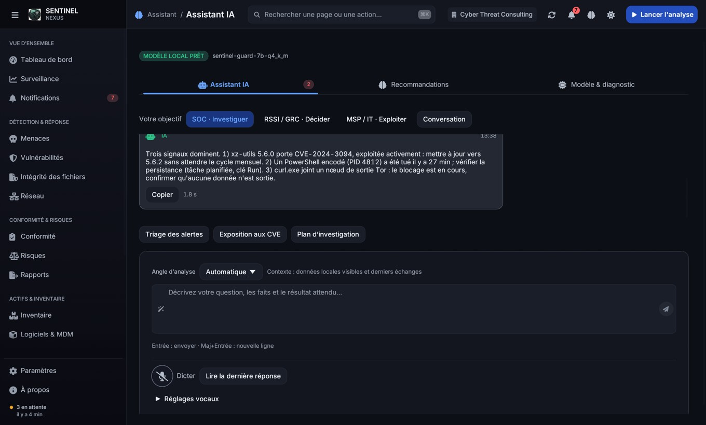
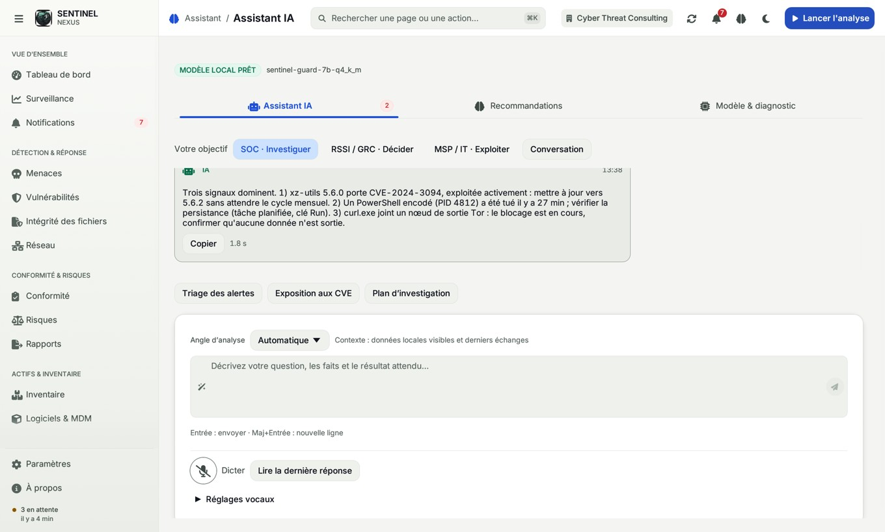
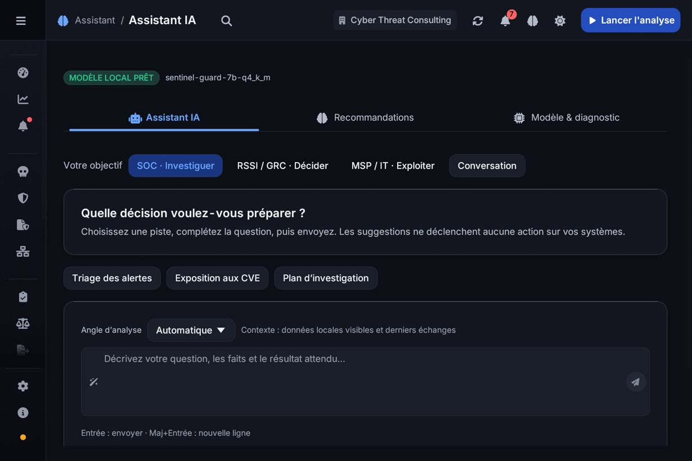
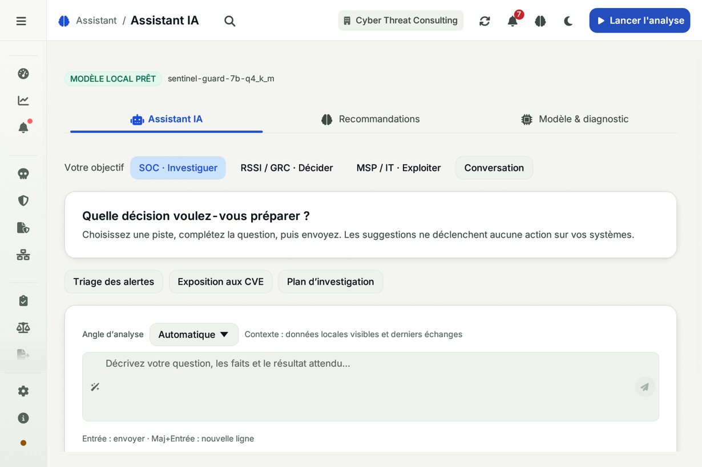
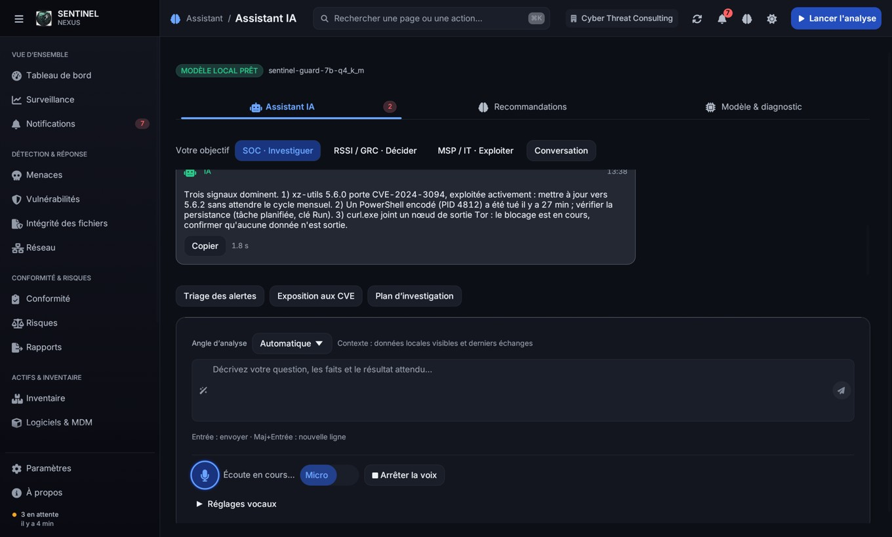
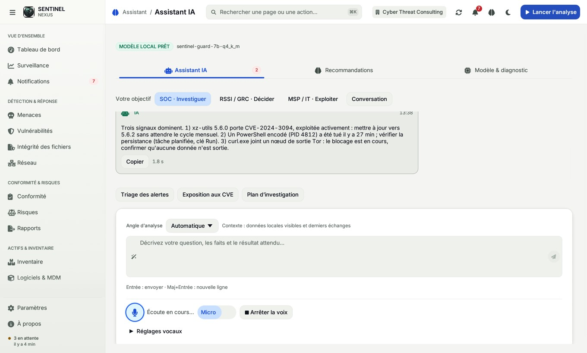
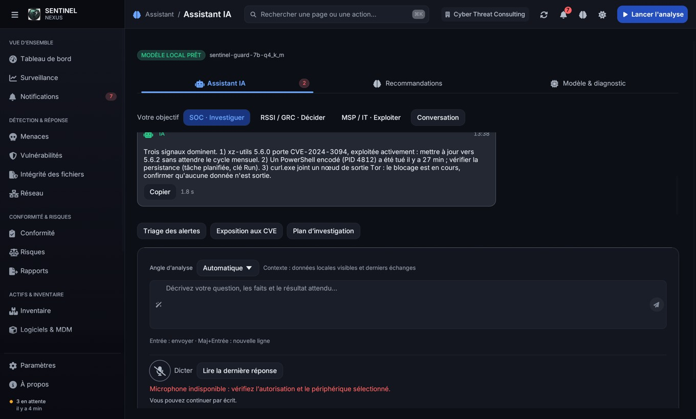
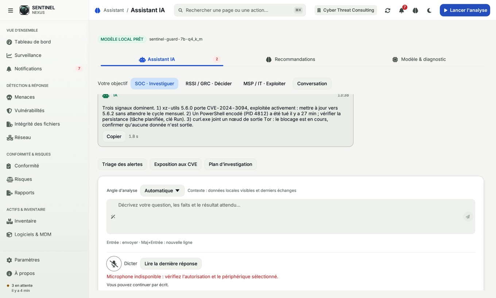
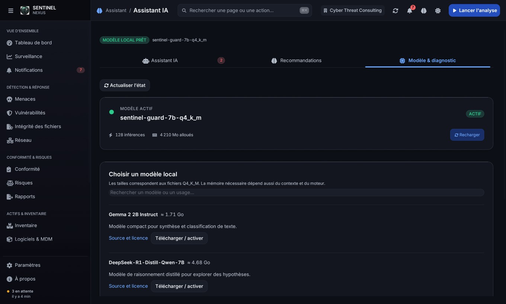
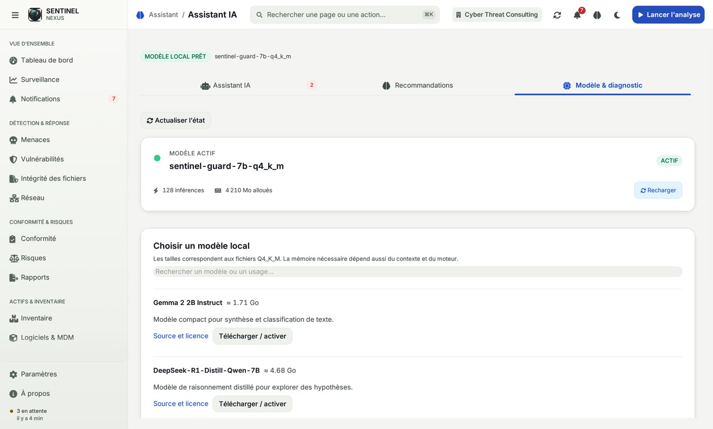

Sentinel IA — interface et voixConversation · Sombre

Conversation · Clair

Premier échange · compact · Sombre

Premier échange · compact · Clair

Dictée simulée · Sombre

Dictée simulée · Clair

Erreur vocale simulée · Sombre

Erreur vocale simulée · Clair

Catalogue des modèles · Sombre

Catalogue des modèles · Clair
